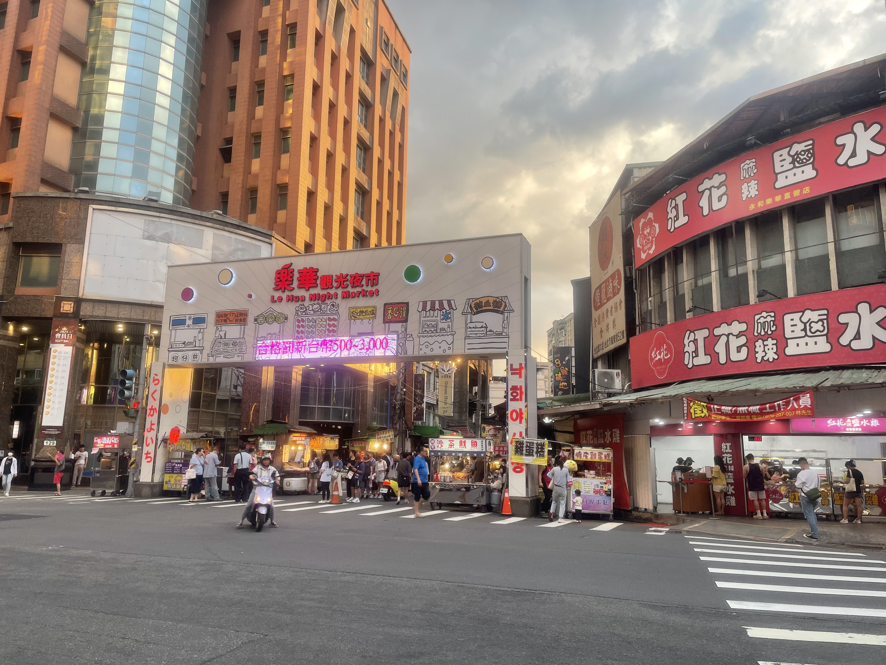
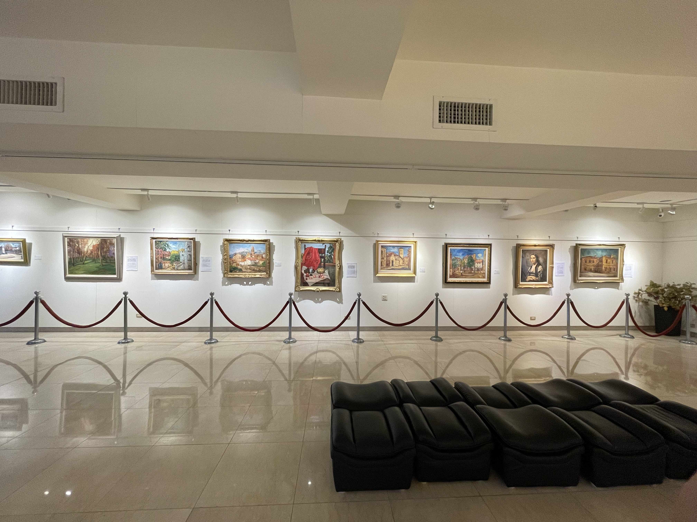
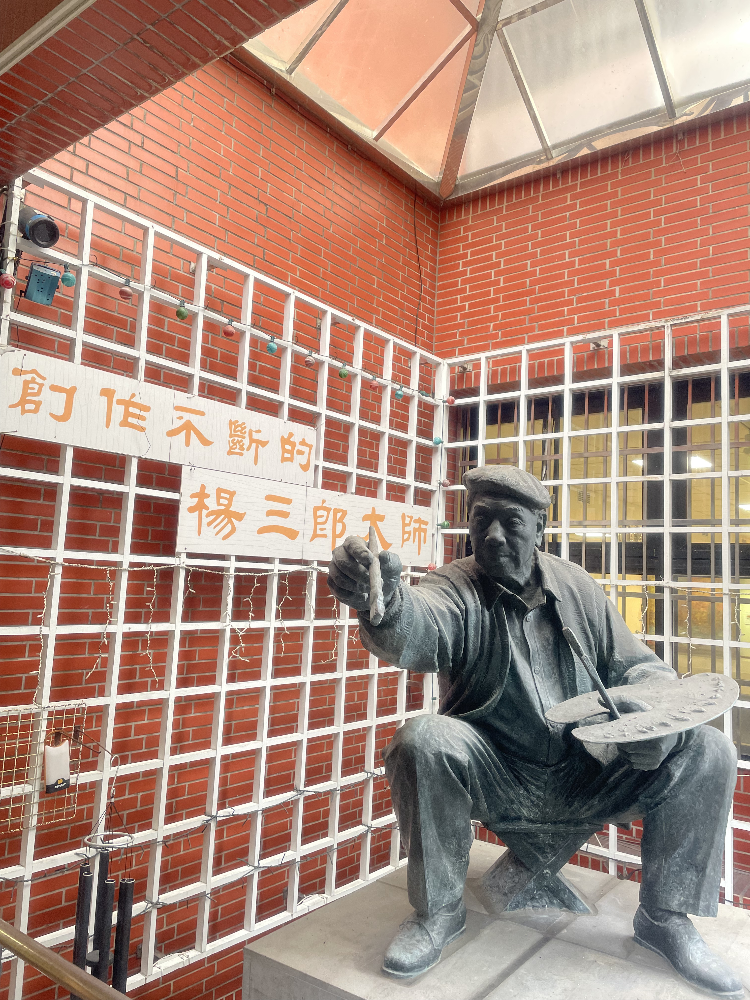

新北市永和區
基本資訊
位於新北市中部偏東，地處台北市的西南側，與中和區、板橋區及台北市的信義區、文山區接壤，是新北市人口密度最高的行政區之一。區域面積小，但生活機能高度集中，兼具住宅、商業與交通功能。 永和區的發展歷史源自清代聚落，戰後因人口快速增加而成為典型的都市密集型生活區。區內街道狹窄、住宅密集，商業活動沿主要幹道發展，形成兼具傳統市場與現代商圈的都市格局。由於地理位置接近台北市中心，永和長期以來扮演重要的通勤與生活角色。 交通方面，永和透過捷運中和新蘆線與主要幹道與台北市緊密連結，便利的交通網絡使居民能輕鬆往返台北市區與新北其他區域。區內生活機能完整，包括學校、醫療機構、市場與各式商業設施，滿足居民日常需求。
主要景點
- 永和四號公園周邊的福和宮及保福寺等寺廟，是區內重要的信仰中心，常有地方信仰活動舉辦，也承載社區歷史記憶。這些寺廟周邊常與傳統商街結合，形成兼具宗教、文化與生活的街區特色。
- 四號公園與景安河濱公園提供居民散步、慢跑及親子休憩的空間，沿著河岸的自行車道也串聯永和與中和的水岸綠帶，使高度都市化的永和區仍保有親近自然的公共空間。
推薦景點
| 樂華夜市
是當地最具代表性的傳統夜市之一，也是北台灣著名的小吃集中地。夜市沿著永和的主要街道延伸，店鋪林立，涵蓋各式台灣傳統小吃、甜品、飲料以及現代創意料理，形成豐富的庶民美食文化景觀。 夜市除了飲食文化，還有小型遊戲攤位及生活用品店，吸引各年齡層民眾前來遊逛。晚間燈火通明的街道與熱鬧的人潮，使樂華夜市成為永和區生活節奏的縮影，也是認識地方飲食文化與社區日常的重要場域。
| 楊三郎美術館
是為紀念臺灣重要西畫家楊三郎而設立的藝術場館。楊三郎為臺灣近代美術發展的重要人物之一，其創作深受印象派影響，畫風明亮、色彩豐富，常以風景、花卉與日常生活為題，展現對土地與自然的細膩觀察。 美術館典藏並展示楊三郎不同時期的繪畫作品，同時介紹其藝術生涯與臺灣美術史脈絡，使觀者得以理解他在戰前、戰後藝術發展中的位置。館舍空間相對靜謐，氛圍親近，適合細細欣賞作品與進行藝術教育活動。


